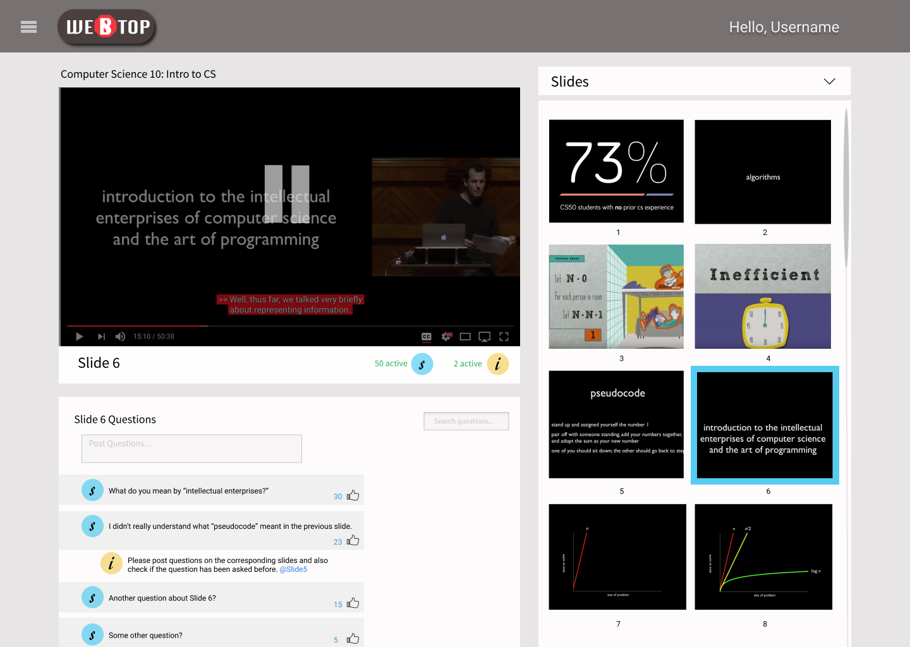
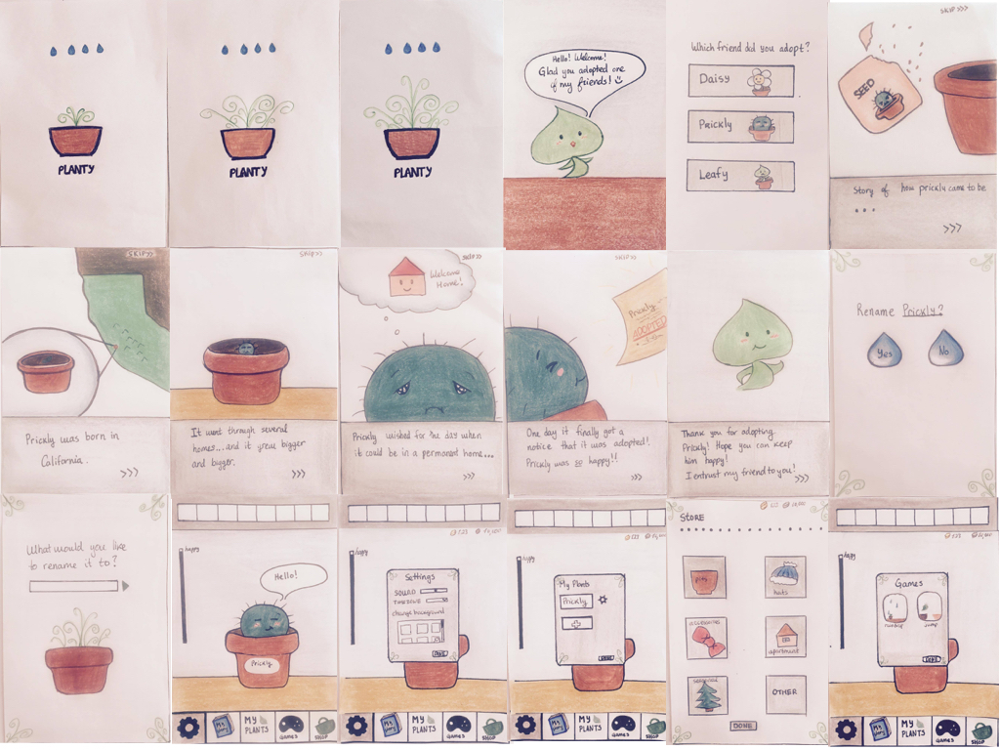
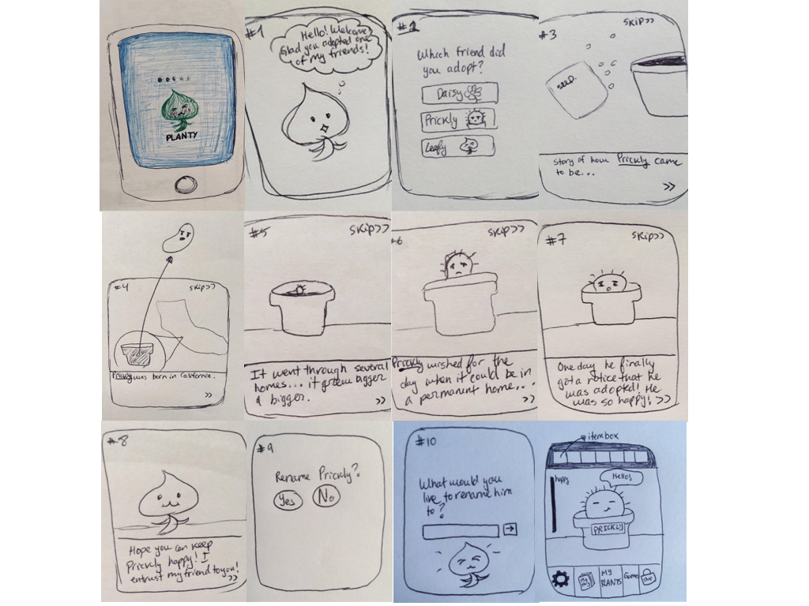

Redesigning the College Experience
The overarching problem that our group tackled in this design process: Large class sizes negatively affect students’ learning experience. We decided to focus mainly on Computer Science classes at UC Berkeley because our group consisted of mainly CS majors. What we proposed at the end was a Reinvented and improved webcast experience. Because classes are so big, we believed that improving the webcast experience and allowing students to ask questions as if they were in lecture, can help them understand the material better. We decided to make it such that if the student pauses the video, they are able to post questions and see other questions from students on that slide. They can also navigate through the video by clicking on the slides on the right. Often, when students want to find a certain part of a webcast video, they end up going back and forth because they don't have a visual image of where each slide is on, therefore, by providing a visual of the slides can help them navigate to different parts of the video without any problems. You can find more detailed documentation about our research here.
Because our group didn't get to make a concrete design of our idea, I decided to continue it in my spare time and created the images bellow with Figma. I also decided to make a logo for it using Illustrator and named our project WebStop:

Planty
In our Human Centered Design class, we were told to find something that bugged us or a problem that we wanted to work on, and design something specifically for it. Once we found a bug, we went through the design process. First, the interview, then the ideation, and finally, we tested our low-fi prototype and created a better version of it. The second prototype was made using invision and can be found at this webpage. You can find more detailed documentation here.
Mid-Fi Prototype:
Low-Fi Prototype:
